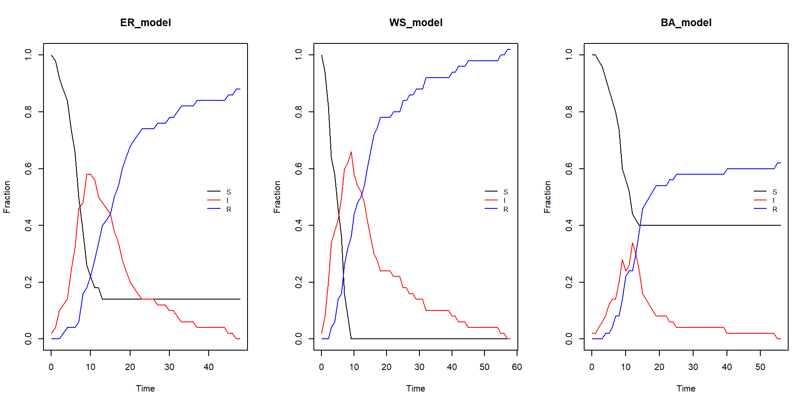

In this document we are going to deal with an introduction to the epidemic models in networks. Note that the first main idea we need to keep in mind is that the infection can only be produced right in the neighborhood of an infected node
It is also true, however, that due to the different origins of any disease, some oubreaks may occur in different places of the network at the same or almost the same time. Then the dynamics of the network can be rather complicated with random nodes getting infected and then spreading the disease, others getting recovered, others getting retired from the network, thus breaking connections, and so on.
The first main impact in the equations of the classical epidemic models is that if an individual has \(\langle k \rangle\) contacts with a probability of transmission of \(\beta\), the average number of infections in a time interval \(dt\) is
\[\begin{equation} \langle k \rangle \beta\frac{S(t)I(t)}{N} \end{equation}\]
which means that there is a factor of \(\langle k \rangle\) that will appear in all our formulas and that we have not previously considered. For example,
\[\begin{equation} R_0 = \frac{\beta \langle k\rangle}{\gamma} \end{equation}\]
However, even this is not enough, since we already know that the topology of the network makes a difference when it comes to specify the dynamics in and of the network, for example, in a power-law network, the average degree is important, but the degree exponent is even more since it determines the regime of the network and if whether or not the average degree exists.
Following Bjonrnstad’s book Epidemics, we can define the following functions
SIR_net <- function(x, tau, gamma, seed = 101){
# This function generates the values for a SIR model
N <- dim(x)[1]
I <- matrix(rep(0,N), nrow = N, ncol = 1)
S <- matrix(rep(1,N), nrow = N, ncol = 1)
R <- matrix(rep(0,N), nrow = N, ncol = 1)
set.seed(seed)
init_inf <- sample(1:N, size = 1)
I[init_inf, 1] <- 1
S[init_inf, 1] <- 1
t <- 1
while( sum(I[,t-1]) > 0 | t == 1){
t <- t+1
neig_inf <- x %*% I[, t-1]
prob_inf <- 1 - (1-tau)^neig_inf
new_inf <- rbinom(N, S[,t-1], prob_inf)
new_rec <- rbinom(N, I[,t-1], gamma)
next_s <- S[, t-1] - new_inf
next_i <- I[, t-1] + new_inf - new_rec
next_r <- R[, t-1] + new_rec
S <- cbind(S, next_s)
I <- cbind(I, next_i)
R <- cbind(R, next_r)
}
out <- list(S = S,I = I,R = R)
return(out)
}
model.netSIR <- function(x){
# Just turn the output into a dataframe
S <- apply(x$S, 2, sum)
I <- apply(x$I, 2, sum)
R <- apply(x$R, 2, sum)
time <- 0:(length(S)-1)
output = data.frame(time = time, S=S/max(S), I=I/max(S), R=R/max(S))
return(output)
}
net_R0 <- function(x, tau, gamma){
# Computation of R0 for a network
deg_dist <- apply(x, 2, sum)
deg_mean <- mean(deg_dist)
deg_var <- mean(deg_dist^2)
R0 <- tau/(tau+gamma) * (deg_var - deg_mean)/deg_mean
return(R0)
}To work with a disease outbreak in a network. The spreading of the disease is modelized using a chain binomial model, which assumes that the epidemics is formed from a sequence of discrete Bernoulli events.
Let’s create three different models and obtain their corresponding adjacency matrices
# Networks -------------------------------------------------------
set.seed(101)
# ER-model
er_epi <- erdos.renyi.game(50, 0.05, "gnp")
er_am_epi <- as.matrix(get.adjacency(er_epi))
# WS-model
ws_epi <- watts.strogatz.game(1, 50, 3, 0.05)
ws_am_epi <- as.matrix(get.adjacency(ws_epi))
# BA-model
ba_epi <- barabasi.game(50, 0.9, out.dist = c(0.35, 0.45, 0.20), directed = FALSE)
ba_am_epi <- as.matrix(get.adjacency(ba_epi))Let’s set the values of the probabilities of the SIR model
Now we can simulate the epidemics from a random node in all the networks
# Models
er_sir <- SIR_net(er_am_epi, tau, gamma, 123)
ws_sir <- SIR_net(ws_am_epi, tau, gamma)
ba_sir <- SIR_net(ba_am_epi, tau, gamma)
# Fits
er_fit <- model.netSIR(er_sir)
ws_fit <- model.netSIR(ws_sir)
ba_fit <- model.netSIR(ba_sir)
# Ro
er_R0 <- net_R0(er_am_epi, tau, gamma)
ws_R0 <- net_R0(ws_am_epi, tau, gamma)
ba_R0 <- net_R0(ba_am_epi, tau, gamma)Finally we can plot the results
models <- list("ER_model" = er_fit,
"WS_model" = ws_fit,
"BA_model" = ba_fit)
m_names <- names(models)
par(mfrow = c(1,3))
for(i in 1:length(models)){
plot(x = models[[i]]$time, y = models[[i]]$S,
ylab = "Fraction",
xlab = "Time",
type = "l",
ylim = c(0, 1),
xlim = c(0, max(models[[i]]$time)),
main = m_names[i])
lines(x = models[[i]]$time, y = models[[i]]$I, col = "red")
lines(x = models[[i]]$time, y = models[[i]]$R, col = "blue")
legend(max(models[[i]]$time)-10, 0.55,
legend = c("S", "I", "R"),
lty = c(1, 1, 1),
cex = 0.8,
col = c("black", "red", "blue"),
box.lty = 0)
}